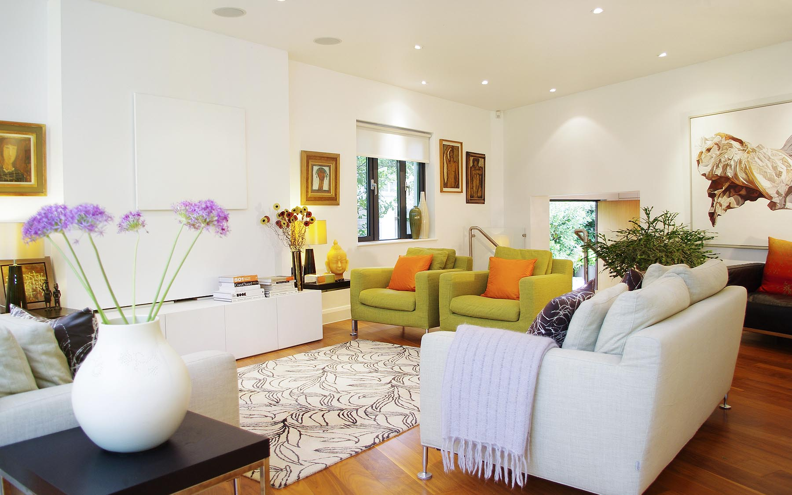

Changes to the Grid
Bootstrap 3 still features a 12-column grid, but many of the CSS class names have completely changed.
Percentage-based sizing
With "mobile-first" there is now only one percentage-based grid.